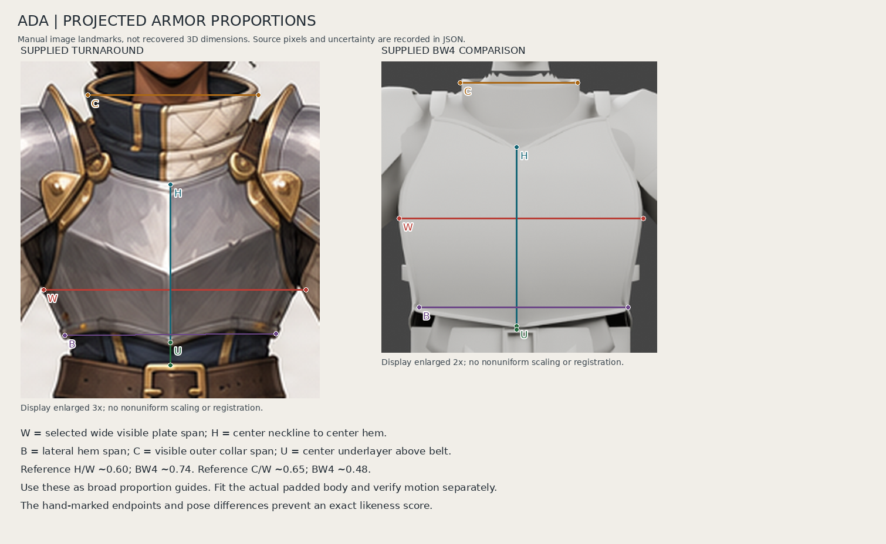
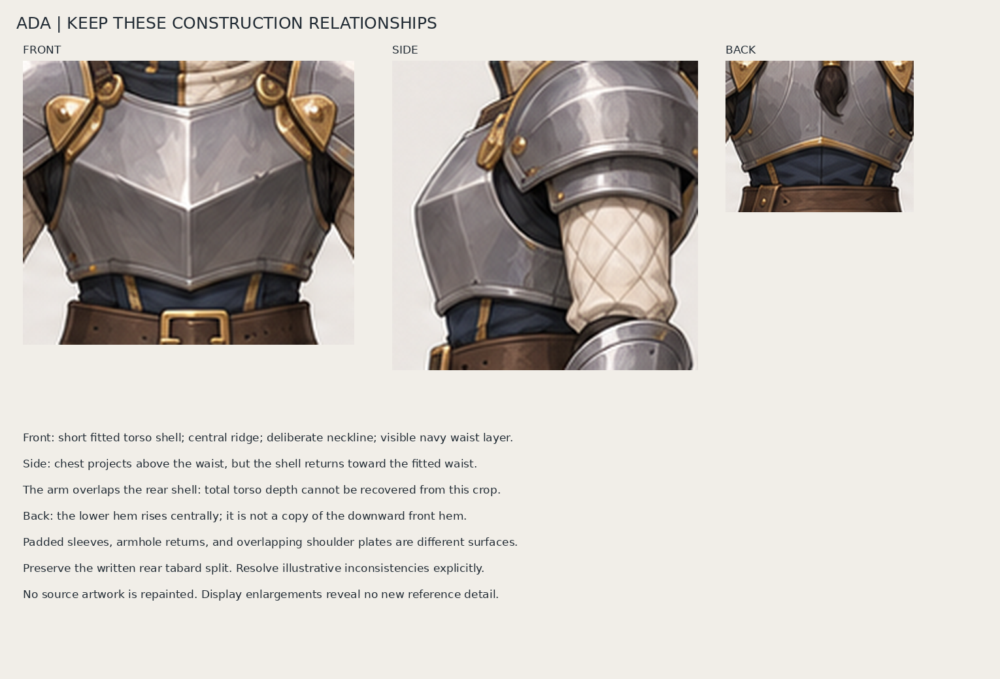
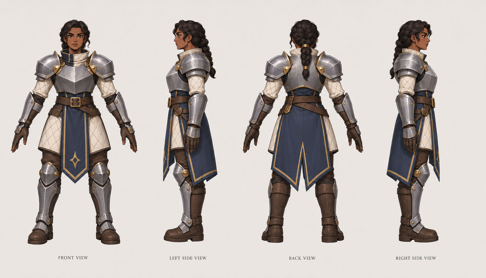
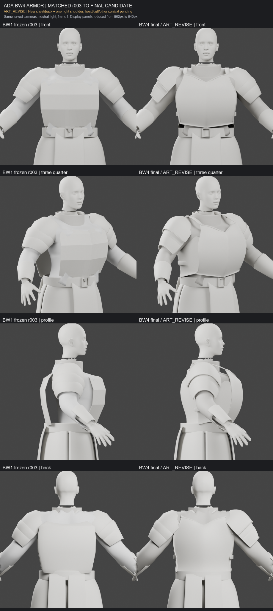
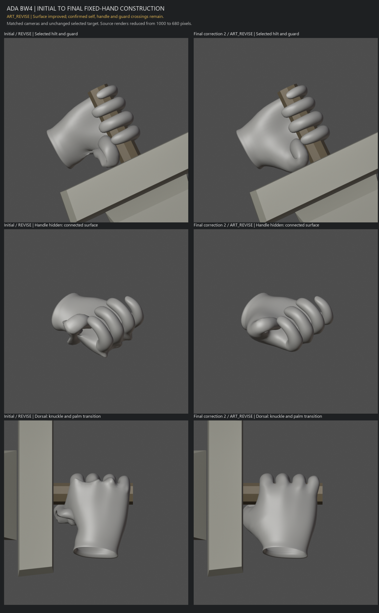

Projected ratios are approximate observations from the uploaded artwork and comparison. No nonuniform image warp or 3D fitting was executed. Use actual body/coat sections and fixed review cameras locally. Images open at full saved size.
Measured relationships
Hand-selected projected endpoints. Read uncertainty before using numbers.

Construction relationships
Front/side/back crops are not metric blueprints.

Full supplied turnaround
Latest user-supplied visual target, retained unchanged.

Supplied BW4 armor comparison
User-supplied PNG; its bytes differ from the hash named in the BW4 report. Fresh local source renders are required for final binding.

Supplied BW4 fixed hand
User-supplied PNG of ART_REVISE geometry, not a successful hand.
